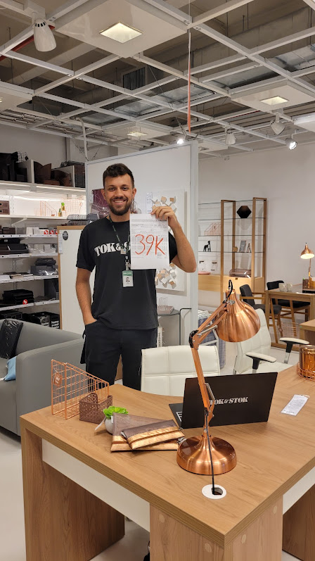

12 de abril de 2021
Tok&Stok

Mudando um pouco de área fui para o varejo na loja Tok&Stok, onde comecei como Consultor de Acessórios, trabalhando na área de acessórios para casa em geral. Após 6 meses fui promovido para Assistente de Almoxarifado, ficando na frente de um setor e direcionando uma pequena equipe. Pouco mais de 6 meses, mais uma promoção para Vendedor Decorador, vendendo móveis e solucionando a decoração de muitas casas!